The playable demo is a separate build. The gallery and rules show the current development build.
Symbols that change the spin
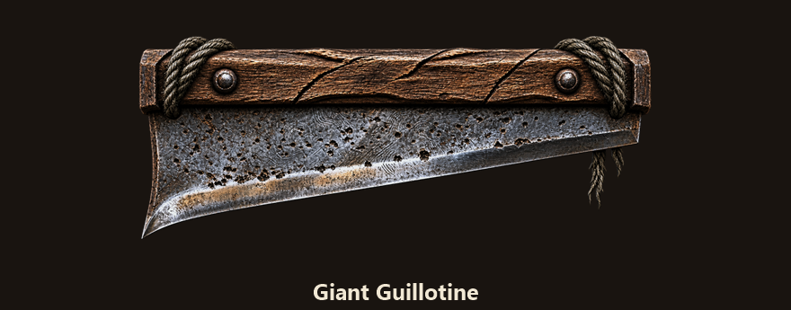
Giant Guillotine
When it lands on the top reel, the blade drops through the three middle columns and opens the Guillotine trial. In Execution Bonus, the blade cuts the chained skeletons’ hands and refills the remaining chances.
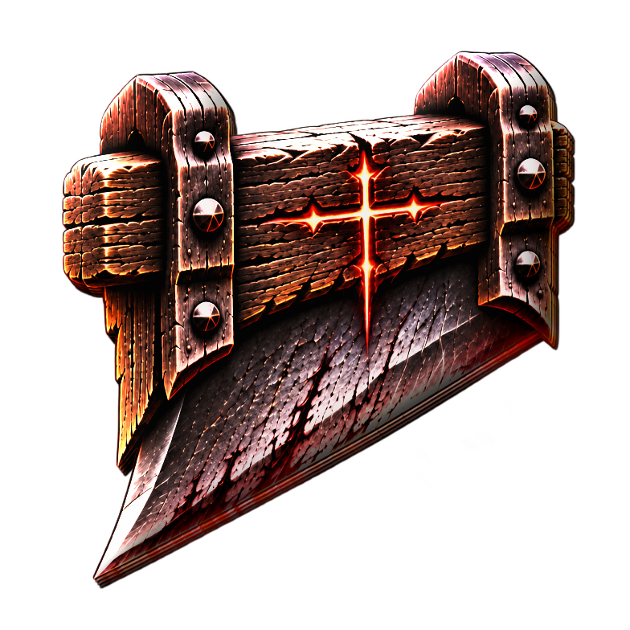
Mini Guillotine
It falls through the symbols below. Cut Shackles feed the Chest, and cut ravens move to the perch.
Max Win
In the Giant Guillotine trial, MAX on reel 2 and WIN on reel 4 complete the pair. The hooded companion is revealed on reel 3.
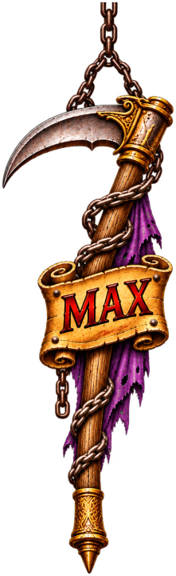
MAX · reel 2
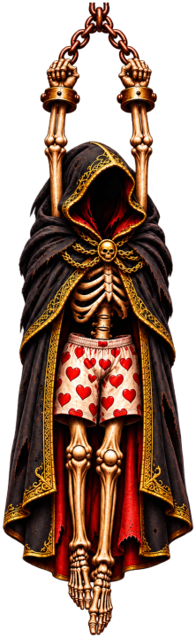
Hooded companion · reel 3
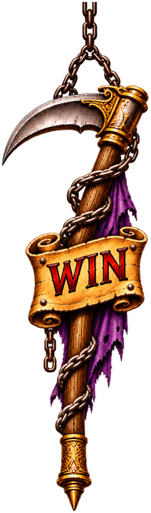
WIN · reel 4
Raven WILDs
The regular WILD substitutes on winning lines. Multiplier versions also multiply the line prize and add their displayed value to the perch when cut.
Shackles cash bags
A blade cut adds the Shackles to the Chest counter. If the Shackles carry a bag, it pays its displayed multiple of the bet when the bag reaches the Chest.
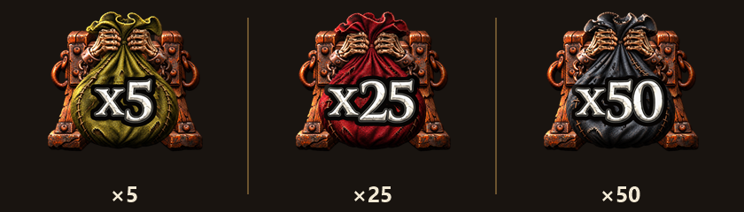
Payline symbols
These nine symbols pay when they match on a qualifying line. The regular Shackles appear here as a line symbol. The cash-bag variants are shown above.
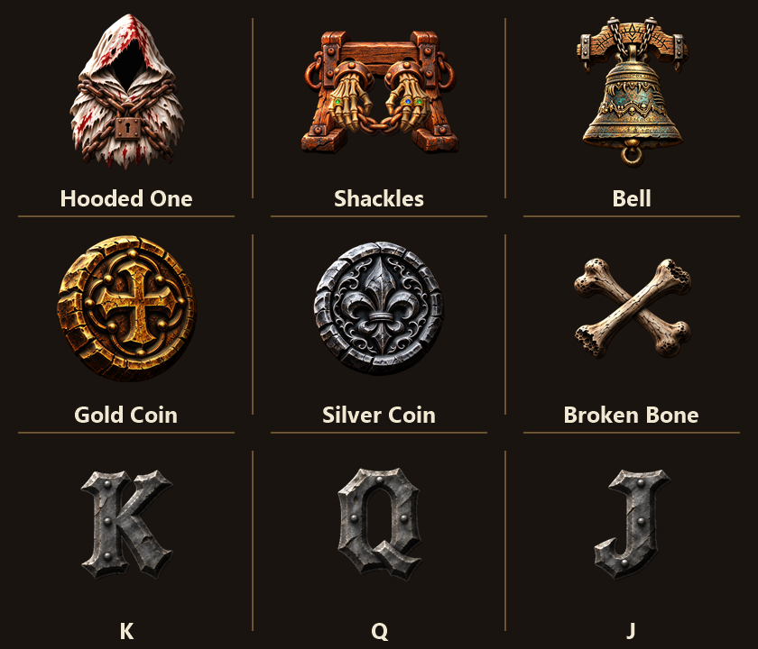
01 · The idea
A world, a machine, a feeling.
Ossuary Reels is my independent game-design project: a dark-fantasy slot built around a ribcage-shaped board.
The design challenge is to make an unusual shape playable, give its mechanics a shared visual language and use animation and sound to make each event readable and expressive.
This case study follows three threads: art direction, mechanics and game feel. It documents work in progress; the final build, artwork and validation will replace the current development material.
03 · The board
A ribcage instead of a grid
The board is a ribcage of independent reels: a top rib, a centre spine and four ribs on each side, with the chest at the bottom. I designed the paylines around the bones, so a win can travel in directions a 5×3 grid never allows.
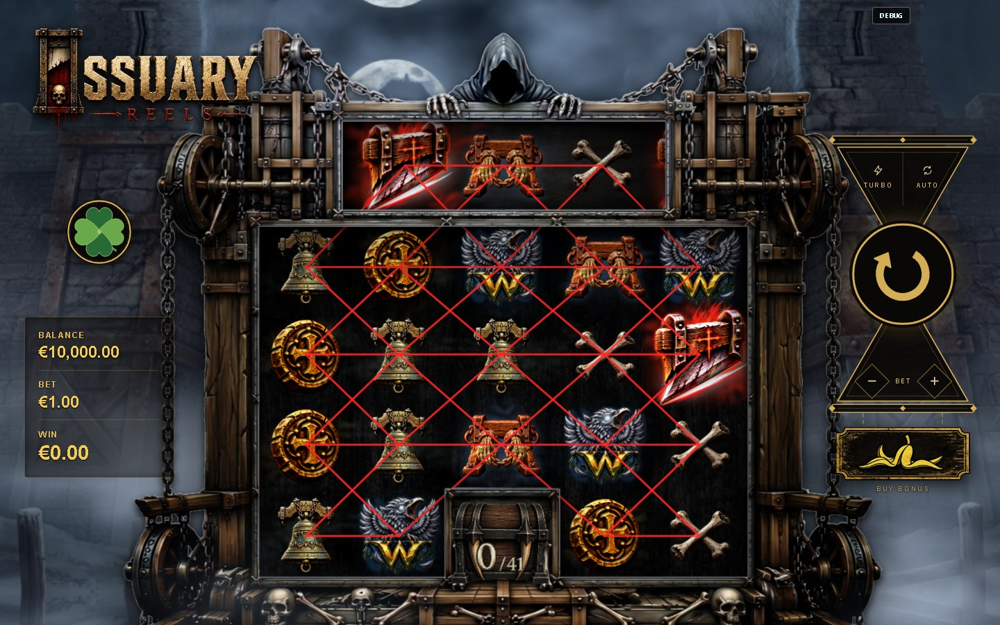
Debug view: the payline network over the board. Every red line is a path a win can follow.
Goal
A distinctive board that still reads at a glance.
Decision
Keep the ribcage layout, but build it as a working machine with clear lanes.
Rule
Lines start on the left and may step one row up or down per reel: 173 paths, three of a kind or wild to pay.
04 · Mechanics
How the mechanics connect
Cuts link the base reels to the chest, the Raven chain and the bonus modes.
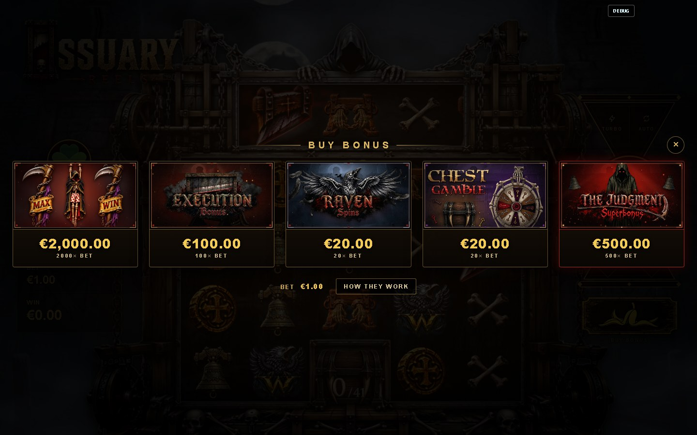
The development build’s bonus menu, including the Max Win Attempt.
Raven Chain
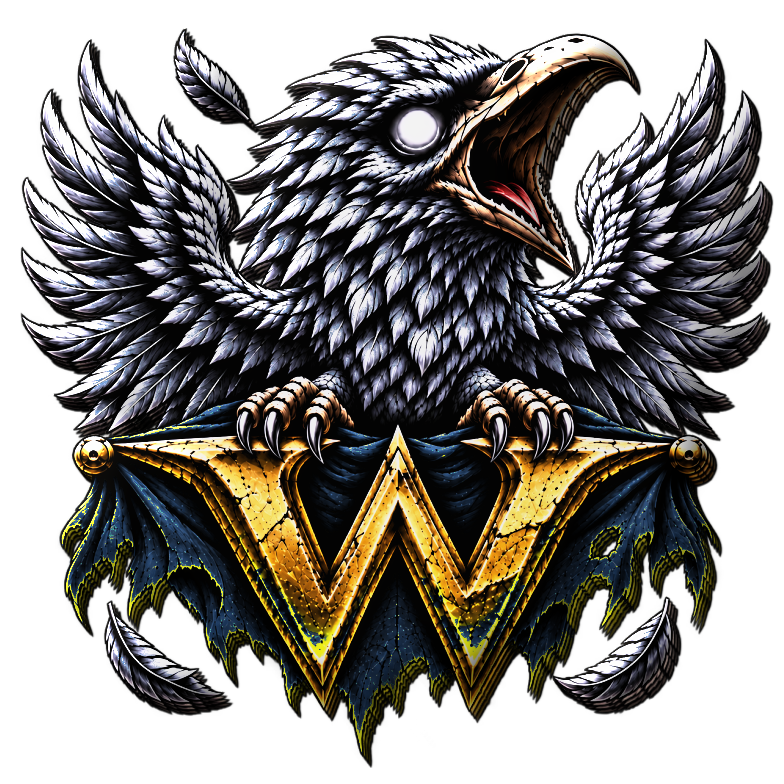
Perch
Cut a Raven WILD and a raven perches above the reels. Ravens on the same side add to their perch multiplier.
Stone throw
A skeleton can throw a stone after a cut. If it hits, the raven falls through its column and leaves multiplier WILDs in the cells it crosses.
Free spin
Each raven hit grants a Raven Spin. The stone becomes less likely to hit as the chain progresses.
Before the throw, the number on the perched raven shows its multiplier.
Perch animation. A cut raven moves above the reel machine.
I kept the hold between the door opening and the throw so the player has time to look from the skeleton to the perched raven.
Blades & the Chest
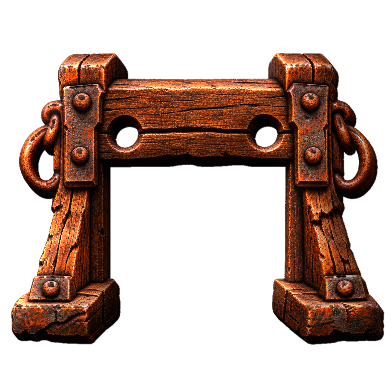
Fill the Chest
Only cut Shackles advance the Chest counter. A cash bag attached to Shackles pays separately when the cut bag reaches the Chest.
Open it
Once the target is reached, the next base spin paying more than five times the bet opens the Chest.
Choose
Collect the displayed prize or spin the wheel. The wheel can award a multiplier or open Execution or The Judgment.
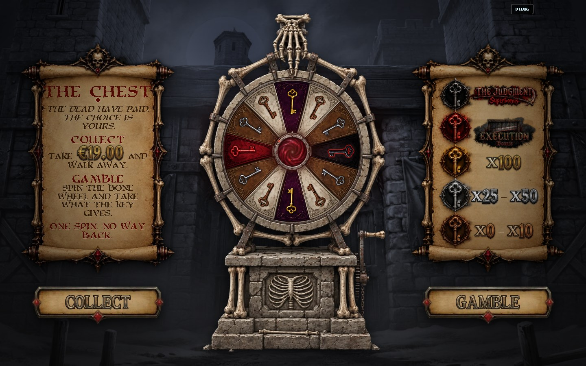
The player can see the collect amount and the wheel’s possible outcomes before choosing.
Cash bags · ×5, ×25 and ×50
When a Mini Blade cuts Shackles carrying a bag, the bag pays its displayed multiple of the bet as it reaches the Chest. The cut also advances the Chest counter.
Guillotine trial
The three condemned
In the Guillotine trial, complete figures of these types can land on the three middle reels. A round with all three positions occupied by complete condemned opens Execution Bonus.
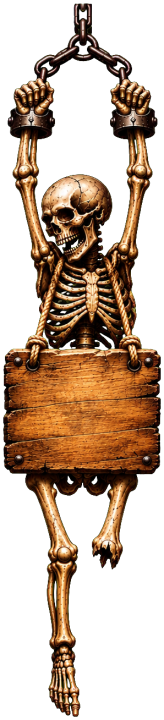
Poor
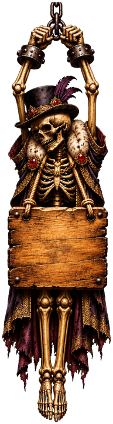
Noble
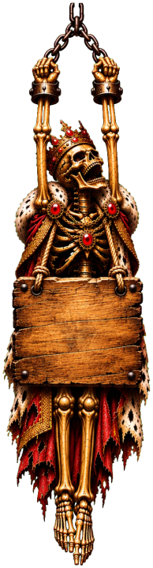
Rich
Execution Bonus
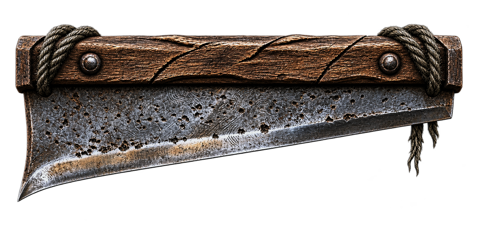
Enter
In the base game, three initial Mini Blades without the upper Guillotine can open Execution. It can also start from the Guillotine trial, the Chest wheel or Buy Bonus.
Cut
Condemned skeletons lock into the side stocks. The Guillotine pays for hands and restores three chances. The Scythe pays for heads and leaves the skeletons available for a later hand cut.
Build the multiplier
Cut hands fill the box. Crossing its thresholds raises the multiplier on later cuts. Any skeleton still uncut when the bonus ends goes unpaid.
The side stocks show the condemned available for a cut. The red hourglass tracks the chances left.
Blood Mark: A chained skeleton can flash BLIGHTED before a cut. Its multiplier transfers to the Guillotine and boosts that cut. Last Breath can grant another chance when the bonus would otherwise end.
The Judgment Bonus
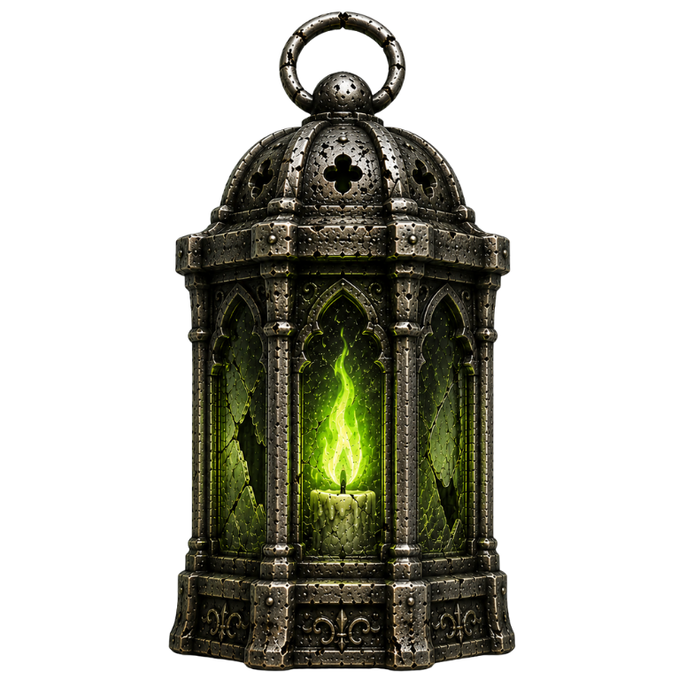
Enter
In the base game, three initial Mini Blades with the upper Guillotine can open The Judgment. The Chest wheel and Buy Bonus offer other routes.
Bells
Each spin uses a bell. A crow landing in the middle of a nest reel can earn another bell when Death reaps it.
Lantern
Condemned that land in stocks add their soul value to the lantern. Blighted figures add an enhanced value and strengthen the scythe.
Sentence
The scythe grows as Death reaps crows. At the Sentence, the scythe multiplier applies to the final lantern total.
The nest sits above the stocks. The lantern below Death shows the running total, while the counter on the right shows the bells left.
Max Win
MAX lands on reel 2 and WIN on reel 4. Their landing reveals the hooded companion on reel 3 and triggers the top prize.
The completed pair on the reels, before the payout counter.The three reels settle and reveal the MAX/WIN pair and the hooded companion. Captured in Turbo without audio.05 · Feel & sound
Let moments breathe
Not everything needs to happen at once, and not every moment needs the same intensity. Rhythm, pauses, sound and animation decide how much weight a moment has. A lot of things worked technically and still didn’t feel right, so I kept going back.
04
A big win, cut to the music
A big win should feel like the climax of a song, not a number going up.
The problem
A ×40 win took 21 seconds with the spin button locked, and small wins felt heavy.
What I changed: the count depends on the win
up to ×25
1–2 s
up to ×100
4.2 s
up to ×250
8.2 s · 2 bars
up to ×500
12.2 s · 3 bars
×500 and up
~18 s · the full show
Small wins count fast and silent. Above ×25 the music starts with the counter, and the number always lands on a cymbal hit. I measured the hits in the track by hand (4.205, 8.185 and 12.205 s) and the number lands 30 ms after each one. In turbo the musical tiers don’t speed up: they use half the bars, so they stay in time.
The raven lands on the middle digit once the count settles.
Built-in 100× counter preview, captured without audio.06 · Iteration
Evolution & redesigns
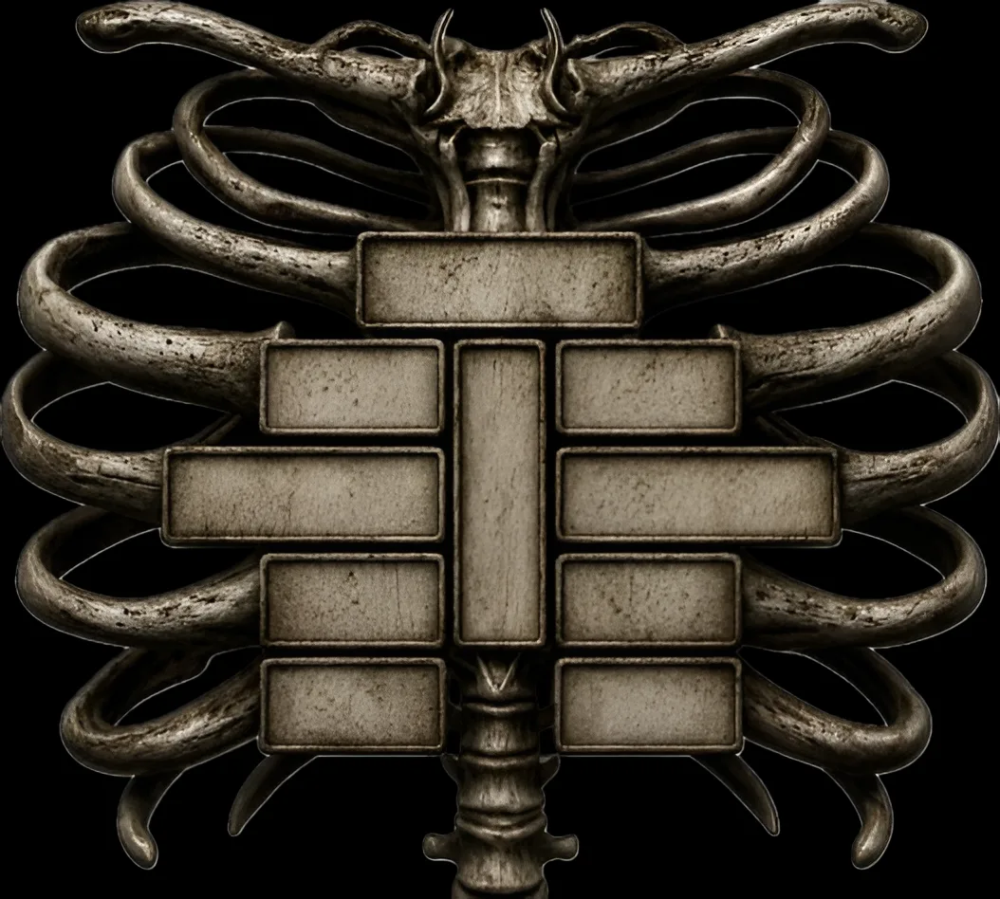
Early concept · the frame established the reel layout.Current build · symbols and side-mounted controls make the lanes readable.
Most of the development was iteration. At one point I threw away almost the entire original reel structure because, although it worked, it didn’t feel right. It was a big step back, and one of the best decisions of the project.
It kept happening: I’d improve one part and suddenly another felt weaker. I started calling them mountains.
Improve one, find the next one that’s weaker, go back, cut what isn’t helping, test again.
From the dev log · 244 logged changes since June 2026
Paylines. Chose a network of 173 paths that follow the bones, instead of fixed lines drawn on a grid.
Big-win counter. Rebuilt from scratch after a power cut wiped the work in progress.
Winning symbols. Cut down to a single shake and a single flash.
Raven chain. A dead raven now grants a free spin and the stone’s odds step down spin by spin. Golden crows added. The big-win count re-timed by win size.
Anticipation pass. The board darkens and the ravens tremble while the stone flies; decisive respins hold back before they stop.
New HUD. An hourglass spin button and a clover menu, built to be reused in future slots; a summary screen after every bonus; motion blur on the spin.
What I learned: a mechanic can work perfectly and still not feel right, and designing a game you enjoy even when you lose is much harder than it sounds. How a loss, a near-miss or an almost-reward is presented changes everything.
07 · Game math
Game math
Specifications and results from the 18 November 2026 calibration of the development build.
Game specifications and design targets
Metric
Value
What it measures
Target RTP
97.00%
Return to player target used in calibration.
Volatility
High
Design target for how concentrated the payouts are.
Paylines
173
Winning paths through the ribcage.
Maximum payout
20,000×
Configured cap as a multiple of the base bet.
Development simulation · base rounds
Metric
Value
What it measures
Simulated RTP
96.20%
Total payouts divided by total stakes in the simulation. 95% confidence interval: 92.77%–99.63%.
Hit rate
42.05%
Rounds that returned any amount, even less than the stake.
Net-win rate
7.64%
Rounds that returned more than the stake.
Payouts of 100× or more
0.125%
Rounds that returned at least 100 times the base bet (1,247 in this sample).
Method: 1,000,000 paid base rounds, including any bonus play those rounds triggered. The simulation chose Gamble whenever the Chest offered it. Seed: cert97-locked-base-1M.
The RTP target falls within this run’s confidence interval. These results apply to the tested configuration. The linked browser demo uses a separate build.
What’s next
Repeat the simulation after balance changes.
The next beta, with a trailer and the updated demo.